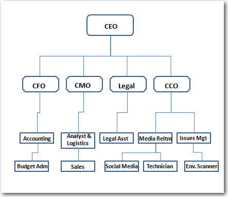
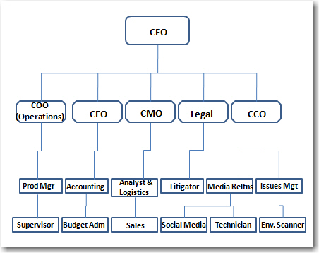
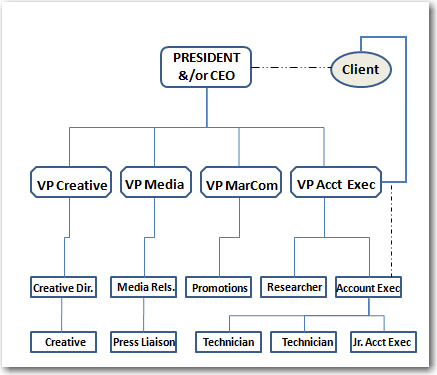

The International Association of Business Communicators (IABC) study on Excellence in Public Relations and Communication Management (Excellence Study) found three primary variables for predicting excellence: communicator knowledge, shared expectations about communication, and the character of organizations.Grunig, J. E. (1992). As mentioned in Chapter 4 "Public Relations as a Management Function", public relations professionals who demonstrate greater management skills are more likely to participate in the C-suite. However, there are also organizational factors that influence the role that public relations plays in an organization. First, management must value the contributions that public relations can make to an organization; second, there must be a participative culture; and third, the organization must support diversity of people and ideas.
The Excellence Study found that communicator expertise was not enough to predict the best practices of public relations.Grunig, Grunig, and Dozier (2002). There had to be shared expectations between the communications function and senior management or dominant coalition. If the chief executive officer (CEO) and other top managers expect the public relations function to be strategic and contribute to the organization’s bottom-line goals, they often require and support practices that included research and strategic planning and management rather than simply press releases and media placement. Such demand for advanced, two-way communication influences the actual practice in these organizations. It requires hiring and retaining professionals who can conduct research and analyze data that allows for more strategic practices.
In order to gain a strategic management role in the organization, the public relations function must show its value to management. Hambrick said that coping with uncertainty is the basis for demonstrating value.Hambrick (1981), pp. 253–276. Technology, workflow, and external environments all contribute to creating uncertainties and, therefore, strategic contingencies. Excellent public relations should help an organization cope with the uncertainties. This can be achieved only with data and useful information. Information theory posits that data are only useful inasmuch as they reduce uncertainty.
When the public relations function provides information and feedback about stakeholder needs and expectations, it performs a critical task for the organization that is unique to its function. Saunders suggested that reducing uncertainty, performing a critical task, and being nonsubstitutable and pervasive all contribute to the influence of any function in an organization.Saunders (1981), pp. 431–442. Influence is increased when public relations can show that it is unique and cannot be substituted by another function within the organization (it is nonsubstitutable) and when it is connected throughout the organization in such a way that it can help manage relationships with all the key stakeholders (it is pervasive). This unique task is much more critical to the organization when it is focused on establishing, maintaining, and repairing relationships with key stakeholders who are needed to help the organization be successful. When the function is simply publicity and media relations, these outcomes may be considered less critical and somewhat disposable when budgets become limited.
Organizations that scored high on the Excellence Study indicators had a culture that was participative rather than authoritarian. An organization’s formal structure can often predict how much participation occurs in making decisions. Organizations that have very centralized and formal structures keep the decision-making function in the hands of a few top managers. Such hierarchical structures often have difficulty dealing with dynamic external environments, because their insulated structures are slower to respond and depend on few voices for making decisions. Robbins argued that centralization is the most detrimental factor impeding organizational effectiveness.Robbins (1990). As L. Grunig summarized, decentralization “has the advantages of reducing the probability of information overload, providing more voices in the decision-making process, responding rapidly to new information, instilling motivation, and helping train managers to make good decisions.”Grunig (1992b), p. 469. Mintzberg identified two decentralization strategies to help organizations deal with dynamic environments: vertical and horizontal.Mintzberg (1980), pp. 322–341. Vertical decentralizationThe delegation of formal decision-making power downward through the chain of command so that the person closest to the situation can make the appropriate decision. is delegating formal decision-making power downward through the chain of command, so that the person closest to the situation can make the appropriate decision. Horizontal decentralizationThe flow of decision-making power informally to people in the operating core and the technostructure, and to support staff. occurs when decision-making power flows informally to people in operating core (people who directly produce the goods and services), technostructure (staff who design, maintain, and adjust work flow processes and structure), and support staff (people who provide indirect support to the rest of the organization: human resources, public relations, legal counsel).
To allow for participative cultures, organizations need to be relatively decentralized because organizational culture can actively shape an organization’s management style and employees’ day-to-day behaviors.Waters and Bird (1987), pp. 15–22. Culture has been defined in the organizational behavior literature as the set of values, ideologies, and cognitions that are shared and understood through social interaction and that determine appropriate behavior. Some organizations have strong (cohesive) cultures, whereas others can be relatively weak (ambiguous). Weak cultures have been tied to increases in political behavior because the values establishing expected behavior are not clearly understood.
For excellent public relations, the values that encourage participative decision making need to be present. The IABC study found the following variables described participative cultures: people feeling part of the team, working together, management caring about employees, everyone treated as equals, participation in decisions, management sharing power and responsibility, and the promotion of teamwork.Sriramesh, Grunig, and Buffington (1992), pp. 577–596). Organizations with authoritative cultures often correlated with centralized decision making and include such variables as rigid control by management, competition between departments, influence (who you know being more important than what you know), decisions based on authority, and fear of senior management. Not surprisingly, the Excellence Study found greater job satisfaction within participative cultures. More importantly, the organizations with participative cultures were also more likely to practice public relations that used two-way communication and research and that was more effective in helping the organization meets its goals and objectives.
Another important predictor of quality cultures in an organization is the treatment of women and employees from culturally diverse backgrounds. As the Excellence Study summarized, employees from diverse backgrounds provide a better picture of the reality outside the organization. Senior managers tend to be isolated from outside factors when they surround themselves with people just like them. Weick recommended requisite variety for senior management, which refers to the concept of striving to have inclusiveness in the management team that reflects outside publics.Weick (1969). Without variety among employees and leaders, an organization can get out of touch with the diversity of its stakeholders. This isolation can lead to awkward interactions and misunderstandings with these publics. Communication can be a difficult endeavor and requires shared experiences to eliminate misinterpretation. Diversity begins within the organization that demonstrates respect for all individuals. This respect for all individuals then extends to all stakeholders and becomes an essential condition for establishing mutually satisfactory relationships.
Organizational structure can, of course, have an impact on communication because of the reporting structures and flow of information in the organization. The typical structure of a simplified organization can be seen in Figure 5.1 "Simple Organizational Structure", with direct reporting relationships represented as solid lines.
Figure 5.1 Simple Organizational Structure
In this figure, a service or information arm would likely be present, but our concern is to focus on the role of the chief communications officer (CCO) relative to the other members of the dominant coalition, or C-suite, all reporting to the CEO. Those executives may vary from organization to organization and industry to industry, depending on the size of the pursuit, how complex it is, and how many sites it operates. Imagine that there are many levels of employees as we move down the organization who are not represented in this chart.
In an organization with a production component, such as any manufacturing-based organization, a more complex understanding of the organization begins to emerge. We can see in Figure 5.2 "Organizational Structure With a Production (Manufacturing) Component" how the chief production officer, or CPO, is added into the dominant coalition mix, alongside the chief finance officer (CFO), chief marketing officer (CMO), legal counsel, and CCO.
Figure 5.2 Organizational Structure With a Production (Manufacturing) Component
Most organizations of this type would have a very wide base of hourly production workers reporting to the CPO, as well as numerous supervisors and administrative staff of various kinds and levels throughout the chart. Simplifying it to the direct-reporting relationships involved in the management chain of command allows us to see how the corporate communication function both reports to the CEO and interacts with the rest of the dominant coalition across functional areas.
Finally, the public relations agency structure can vary a great deal from firm to firm, but it is based upon a consulting relationship to the client. A direct reporting relationship with a senior account executive or vice president of accounts is normally established, as well as a dotted-line, or as-needed, less frequent and more informal reporting relationship between an account executive (AE) and the lead of the agency, often the president or CEO. (See Figure 5.3 "Public Relations Agency Structure" for an example of public relations agency structure.)
Figure 5.3 Public Relations Agency Structure
The AE would have more routine contact with the client on a day-to-day working basis, and the CEO would have only infrequent but important contact with the client. The senior AE would normally oversee the account and all of its operations. The agency would provide creative services, such as graphic design and layout, media relations activities and story placement, and some marketing promotions activities for the client. Some firms have a relationship with advertising agencies, or have an in-house liaison for working with advertising initiatives. The technical skills role in public relations is normally an entry-level position focusing on writing and the creation of tactics or messages that will be disseminated. The larger portion of the chart on the bottom level would be comprised of many technicians of varying production specialties, and also normally employs administrative staff and some interns.
In this chapter, we reviewed findings from the Excellence Study and other sources about the important impact that organizational culture and structure have on the communication function, the view the CEO holds of the public relations practice, and the reasons for encouraging a participative organizational culture as a factor that builds effectiveness. Research supports the notion that public relations is more effective for organizations when it is valued by the dominant coalition or C-suite, the organizational structure is relatively decentralized allowing decision-making autonomy, and there is a direct reporting line between the CCO and the CEO. Further, the Excellence Study argued that the best organizations value participation and diversity.
Obviously, these organizational factors are going to vary from organization to organization, and the structure and organizational cultural elements often reflect the unique needs of each.Argenti (2007). Some may be more centralized and more participative in culture, whereas others might be more decentralized but less participative.